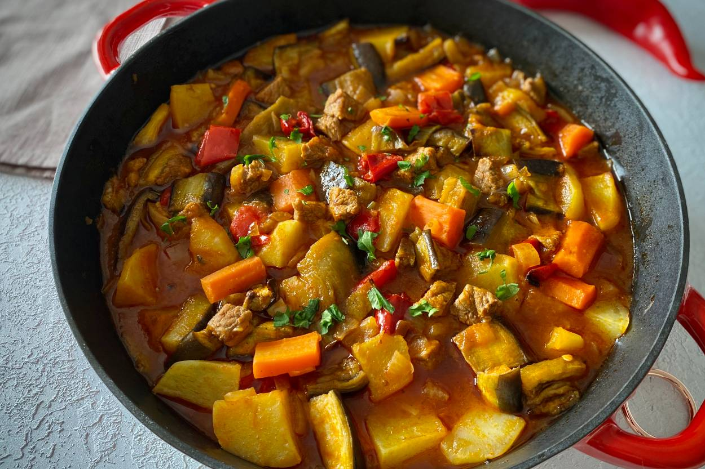

Hem sağlıklı hem de lezzetli bir akşam yemeği arayışındaysanız, fırında sebzeli somon tam size göre! Bu tarifte, somonun doğal lezzeti, taze sebzelerin renkleri ve aromalarıyla bir araya geliyor. Hazırlaması oldukça kolay olan bu yemek, hem hafta içi akşam yemekleri için hem de misafirlerinize sunabileceğiniz şık bir seçenek.
Yemek tarifleri için: yemek tarifleri sayfasına bakabilirsiniz.
Tavuklu pilav, Türk mutfağının vazgeçilmez lezzetlerinden biridir. Bulgur pilavının üzerine yerleştirilen, özenle hazırlanmış tavuk parçalarıyla sofraları süsleyen bu yemek, hem doyurucu hem de lezzetlidir.
Yemek tarifleri için: yemek tarifleri sayfasınabakabilirsiniz.
Sebzeli güveç, hem doyurucu hem de sağlıklı bir yemek seçeneği. Farklı mevsimlerde farklı sebzelerle hazırlayabileceğiniz bu yemeği, kendi zevkinize göre çeşitlendirebilirsiniz.
